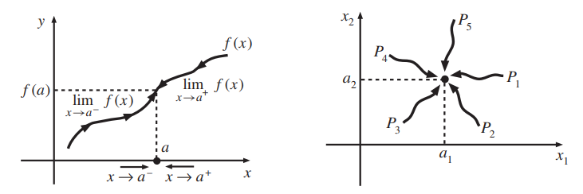
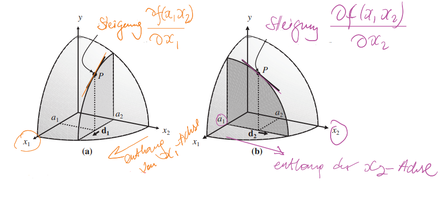
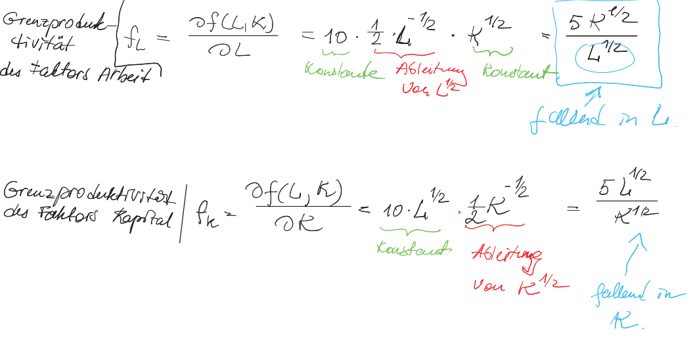
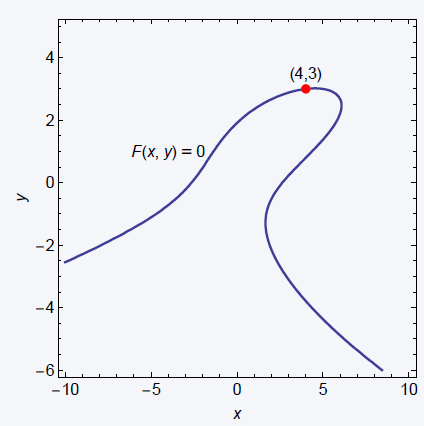
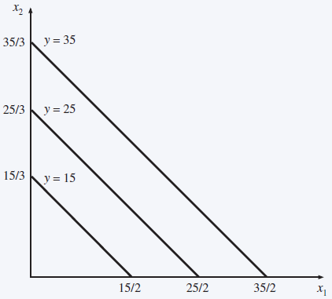

Kapitel 10 Analysis mit \(n\) Veränderlichen
Bislang haben wir in der Analysis Funktionen mit einer Variablen betrachtet.
Die Anwendungsbeispiele in der Linearen Algebra haben aber bereits gezeigt, dass typische Anwendungsprobleme als Funktion mehrerer Variablen auftreten. Beispielsweise hängt das Outputniveau einer Firma typischerweise von mehreren Inputvariablen ab.
Daher erweitern wir die Begriffe der Stetigkeit und der Differenzierbarkeit auf Funktionen mehrere Veränderlicher. Dies ist die Grundlage für die (bedingte) Optimierung von Funktionen mehrerer Veränderlichen.
10.1 Stetigkeit
Es sei \(x = (x_1, ... , x_n)\) ein Punkt im \(\mathbb{R}^n\) , und \(f (x) = f (x_1, ... , x_n) = y\) bezeichne eine Funktion mit \(n\) Variablen.
Zur Feststellung der Stetigkeit einer Funktion \(f\) im Punkt \(a\) genügte im univariaten Fall (\(n = 1\)) die Betrachtung, wie die Funktion sich dem Punkt \(f (a)\) von rechts und von links nähert:
\[\lim_{ x\rightarrow a^-} f (x) = \lim_{x\rightarrow a^+} f (x) = f (a).\]
- Im multivariaten Fall gibt es unendlich viele Möglichkeiten sich dem Punkt \(f (a)\) zu nähern (s. Bild rechts).

Die Definition der Stetigkeit für Funktionen im \(\mathbb{R}\) lautet: Eine Funktion \(f : D\rightarrow \mathbb{R}\) ist stetig in \(a \in D\), falls für jede Folge mit \(\lim_{n\rightarrow\infty} x_n = a\) gilt: \(\lim_{n\rightarrow \infty} f (x_n) = f (a)\).
D.h. für jede Folge, deren Folgenterme fast alle “nah” an \(a\) liegen, die zugehörigen Funktionswerte fast alle “nah” an \(f (a)\) liegen, wobei “nah” durch den (Euklidschen) Abstand \(|x_n − a|\) bestimmt wird.
Im multivariatem Fall wird Stetigkeit für eine Funktion im \(\mathbb{R}^n\) ganz analog definiert, indem (wieder) der Euklidische Abstand zugrunde gelegt wird:
\[d(x,a)= \sqrt{ \sum_{i=1}^{n} (x_i-a_i)^2}.\]
- Spezialfall \(\mathbb{R}^2\) :
\[d(x,a)= \sqrt{ (x_1-a_1)^2 + (x_2-a_2)^2}.\]
Definition 10.1 (Stetigkeit für Funktionen von n Variablen) Eine Funktion \(f\) in \(\mathbb {R}^n\) ist stetig im Punkt \({\bf a} = (a_1,\ldots, a_n)^\top\), wenn für jede \(\varepsilon>0\) es existiert ein \(\delta>0,\) sodass aus \(||{\bf x} - {\bf a}||<\delta\) folgt \(||f({\bf x}) - f({\bf a})||<\varepsilon.\)
10.2 Partielle Ableitungen
Wenn eine Funktion eine stetige Ableitung hat, bezeichnet man sie als differenzierbar. Wir erweitern nun den Begriff der Ableitung auf Funktionen \(f (x_1, ... , x_n)\) im \(\mathbb{R}^n\).
Die (erste) partielle Ableitung von \(f\) nach der \(i\)-ten Variable \(x_i\) erhält man durch Ableiten von \(f\) nach \(x_i\), wobei die übrigen Variablen \(x_1, ... , x_{i−1}, x_{i+1}, ... , x_n\) als Konstanten behandelt werden.
Definition 10.2 (Partielle Ableitung) Es sei \(f: \mathbb{R}^n \rightarrow \mathbb{R}\) differenzierbar in jeder Variablen. Die (ersten) partiellen Ableitungen von \(f\) sind für \(i = 1, ... , n\) gegeben durch
\[\frac{ \partial f(x_1, ... x_n)}{ \partial x_i} =\lim _{ \Delta x_i \rightarrow 0} \frac{f(x_1, ... , x_{i-1}, x_i+ \Delta x_i, x_{i+1}, ... , x_n) -f(x_1, ... , x_n) }{ \Delta x_i }\]
Kurzschreibweise:
\[\frac{ \partial f}{ \partial x_i } = f_{x_i}=f_i.\]
Da es sich bei den partiellen Ableitungen um univariate Ableitungen handelt, gelten die üblichen Ableitungsregeln.
Im bivariaten Fall (zwei Variablen: \(n = 2\)), also \(f: \mathbb{R}^n \rightarrow \mathbb{R}\), gilt:
\(f_{x_1}(x_1,x_2)= \frac{ \partial f(x_1, x_2)}{ \partial x_1} =\lim _{ \Delta x_1 \rightarrow 0} \frac{f(x_1, + \Delta x_1, x_{2} -f(x_1,x_2) }{ \Delta x_1 }\) (partielle Ableitung nach \(x_1\))
\(f_{x_2}(x_1,x_2)= \frac{ \partial f(x_1, x_2)}{ \partial x_2} =\lim _{ \Delta x_2 \rightarrow 0} \frac{f(x_1,x_2 + \Delta x_2) -f(x_1,x_2) }{ \Delta x_2 }\) (partielle Ableitung nach \(x_2\))
Die folgende Abbildung illustriert die partiellen Ableitungen: 
Beispiel 10.1 (Partielle Ableitungen einer Funktion von zwei Veränderlichen) Es sei \[f (x_1,x_2) = \color{red}{x_1^2} \color{blue}{x_2}.\]
Hält man \(\color{blue}{x_2}\) konstant, dann ist die Funktion quadratisch in \(x_1\) mit Skalierungsfaktor \(\color{blue}{x_2}\).
Hält man \(\color{red}{x_1}\) konstant, dann ist die Funktion linear in \(x_2\) mit Steigung \(\color{red}{x_1^2}\) .
Dies spiegelt sich in den partiellen Ableitungen wider:
Partielle Ableitung nach \(x_1\): \[f(x_1)=\frac{ \partial f (x_1, x_2)}{ \partial x_1 } = \overbrace{\color{red}{2x_1}}^{\text{Ableitung von $x_1^2$}}\cdot\underbrace{\color{blue}{x_2}}_{\text{Faktor}} = 2x_1x_2.\]
Partielle Ableitung nach \(x_2\): \[f(x_2)=\frac{ \partial f (x_1, x_2)}{ \partial x_2 } = \overbrace{\color{red}{x_1^2}.}^{\text{Faktor vor $x_2$}}\]
Aufgabe 10.1 (Grenzproduktivität) Bestimmen und interpretieren Sie die partiellen Ableitungen der Produktionsfunktion
\(f (L,K) = 10L^{1/2} K^{1/2}\).
Hierbei stellen \(L\) den Faktor Arbeit und \(K\) den Faktor Kapital dar.Antwort

Im Allgemeinen werden die partiellen Ableitungen \(\frac{\partial f}{\partial x_i}\) von den Werten der übrigen Variablen \(x_1, ... , x_{i−1}, x_{i+1}, x_n\) abhängen.
Funktionen in der Klasse der additiv separierbaren Funktionen besitzen die Eigenschaft, dass ihre partiellen Ableitungen unabhängig von den übrigen Variablen sind.
Definition 10.3 (Additiv separierbare Funktionen) Eine Funktion \(f (x_1, ... , x_n)\) ist additiv separierbar, falls sie wie folgt geschrieben werden kann:
\(f (x_1, ... , x_n) = g_1 (x_1) + g_2 (x_2) + · · · + g_n (x_n)\),
wobei \(g_i\) , \(i = 1, ... , n\), univariate Funktionen sind.
In Falle einer additiv separierbarer Funktion gilt
\[\frac{\partial f}{\partial x_i} = g^\prime_i(x_i).\]
Beispiel 10.2 (Alex' Nutzenfunktion ist additiv separierbar) Die Nutzenfunktion von Alex, die wir im Beipiel 1.3 untersucht haben ist additiv separierbar, denn:
\[U(x,y) = \underbrace{\sqrt{x}}_{g(x)} + \underbrace{\sqrt{y}}_{g(y)}.\]
Daher:
\[U_x(x,y) = U_x(x) = (\sqrt{x})^\prime = \frac 12(x)^{-\frac12} = \frac 12\cdot \frac 1{x^{\frac12}} = \frac1{2\sqrt{x}}.\]
und
\[U_y(x,y) = U_y(y) = (\sqrt{y})^\prime = \frac1{2\sqrt{y}}.\]
Für partielle Ableitungen gilt die folgende Kettenregel.
Theorem 10.1 (Kettenregel) Es sei \(f (x_1(t), x_2(t))\) eine additiv separierbare Funktion, deren Variablen \(x_1\) und \(x_2\) beide von \(t\) (z.B. Zeit) abhängen. Dann gilt:
\[\begin{equation} \frac{df}{dt} = \frac{\partial f}{\partial x_1} \frac{dx_1}{dt} + \frac{ \partial f}{ \partial x_2 } \frac{dx_2}{dt} \tag{10.1} \end{equation}\]
Beweis
\[\frac{\text{d} f}{\text{d} t} = \lim_{\Delta t\rightarrow 0} \frac{f(x_1(t+\Delta t), x_2(t+\Delta t)) - f(x_1(t),x_2(t))} {\Delta t}\] \[\begin{align*} &= \lim_{\Delta t\rightarrow 0} \text{ $\frac{f(x_1(t+\Delta t), x_2(t+\Delta t)) - f(x_1(t), x_2(t+\Delta t)) + f(x_1(t), x_2(t+\Delta t)) - f(x_1(t),x_2(t))} {\Delta t}$}\\ &= \lim_{\Delta t\rightarrow 0} \frac{f(x_1(t+\Delta t), x_2(t+\Delta t)) - f(x_1(t), x_2(t+\Delta t))}{\Delta t} \\ &\phantom{=\,} + \lim_{\Delta t\rightarrow 0} \frac{f(x_1(t), x_2(t+\Delta t)) - f(x_1(t),x_2(t))} {\Delta t}\\[5pt] &= \lim_{\Delta t\rightarrow 0} \frac{f(x_1(t+\Delta t), x_2(t+\Delta t)) - f(x_1(t), x_2(t+\Delta t))}{\underbrace{\Delta x_1}_{=x_1(t+\Delta t)-x_1(t)}} \frac{\Delta x_1}{\Delta t} \\[5pt] &\phantom{=\,} + \lim_{\Delta t\rightarrow 0} \frac{f(x_1(t), x_2(t+\Delta t)) - f(x_1(t),x_2(t))}{\Delta x_2} \frac{\Delta x_2}{\Delta t} = \frac{\partial f}{\partial x_1} \frac{\text{d} x_1}{\text{d}}+ \frac{\partial f}{\partial x_2}\frac{\text{d} x_2}{\text{d} t} \end{align*}\]Beispiel 10.3 (Kettenregel) Es sei \(f (x_1,x_2) = 3x_1 + 5x_2\) mit \(x_1(t) = t^2\) und \(x_2(t) = 4t^3\) .
Die Kettenregel ergibt
\[\frac{df}{dt} = 3\frac{ d t^2}{ \ dt} + 5\frac{d4t^3}{dt} =6t+60t^2.\]
Dasselbe Ergebnis erhält man durch direktes Substituieren der Funktionen \(x_1(t)\) und \(x_2(t)\) in \(f\) und anschließendes Ableiten.
Beispiel 10.4 (Kettenregel für die Nutzenfunktion) Möchte man die Nutzenfunktion aus Beispiel 1.3 als Funktion von Externalitäten/Emissionen (z.B. CO\(_2\)), die mit dem Konsum der beiden Güter einhegehen, betrachten und gegeben die Emissionsfunktionen:
\[t(x) = \frac12x, x>0; ~ t(y)=2y-1, y\geq 1\]
kann man die Nutzenfunktion wie folgt nach der Externalität \(t\) ableiten:
- \(x,y\) als Funktionen von \(t\) (die Emissionsfunktionen nach \(x,y\) umstellen):
\[x(t)=2t \text{ und } y(t)=\frac12(t+1).\]
- Kettenregel benutzen um \(U(x(t),y(t))\) nach \(t\) abzuleiten:
\[\begin{align}\frac{dU}{dt} &= \color{blue}{\frac{\partial U}{\partial x}}\cdot \color{red}{\frac{dx}{dt}} + \color{green}{\frac{\partial U}{\partial y}}\cdot \color{purple}{\frac{dy}{dt}}\\ &=\color{blue}{\frac1{2\sqrt{x}}}\cdot \color{red}{2} + \color{green}{\frac1{2\sqrt{y}}}\cdot \color{purple}{\frac12}\\ &=\frac1{\sqrt{\underbrace{x}}_{=2t}} + \frac1{4\sqrt{\underbrace{y}}_{=0.5(t+1)}}\\ &=\frac1{\sqrt{2t}} + \frac1{4\sqrt{0.5(t+1)}}. \end{align}\]
10.3 Partielle Ableitungen höherer Ordnung
Analog zum univariaten Fall erhält man partielle Ableitungen höherer Ordnung durch mehrfaches Ableiten.
Definition 10.4 (Partielle Ableitungen zweiter Ordnung) Es sei \(f: \mathbb{R}^n \rightarrow \mathbb{R}\) eine zweimal differenzierbare Funktion. Die partiellen Ableitungen zweiter Ordnung sind gegeben durch: \[\frac{ \partial^2 f(x_1, x_n)}{ \partial x_i \delta x_j} = \frac{ \partial f_{x_i} (x_1, ..., x_n)}{ \partial x_j},\ \ \ i,j=1, ... , n.\]
Kurzschreibweisen:
\[\frac{ \partial^2 f}{ \partial x_i \delta x_j} = f_{x_ix_j}=f_{ij}.\]
Die Anzahl der partiellen Ableitungen zweiter Ordnung ist \(n^2\) und ergibt sich aus der Anzahl der Kombinationen von \(i,j = 1, ... , n\).
Die Ableitungen \(f_{ij}, i \neq j\), heißen Kreuzableitungen.
Beispiel 10.5 (Partielle Ableitungen zweiter Ordnung) Es sei \(f: \mathbb{R}^2 \rightarrow \mathbb{R}\). Die partiellen Ableitungen zweiter Ordnung sind gegeben durch:
\[\begin{align}f_{11}(x_1, x_2) &= \frac{ \partial^2 f (x_1, x_2)}{ \partial x_1^2},\\ f_{12}(x_1, x_2) &= \frac{ \partial^2 f (x_1, x_2)}{ \partial x_1\partial x_2},\\ f_{21}(x_1, x_2) &= \frac{ \partial^2 f (x_1, x_2)}{ \partial x_2\partial x_1},\\ f_{22}(x_1, x_2) &= \frac{ \partial^2 f (x_1, x_2)}{ \partial x_2^2}. \end{align}\]
10.3.1 Der Gradientenvektor und die Hesse-Matrix
Die partiellen Ableitungen erster und zweiter Ordnung können in übersichtlich in einem Vektor, bzw. in einer Matrix erfasst werden.
Definition 10.5 (Gradientenvektor) Sei \(f:\mathbb R^n\rightarrow\mathbb R\) eine differenzierbare Funktion. Der Gradientenvektor oder der Gradient ist der Vektor des Teils erster Ordnung Derivate: \[\begin{equation*} \nabla f = \begin{bmatrix} f_1\\ f_2\\ \vdots\\ f_n \end{bmatrix} \quad\text{ oder }\quad \nabla f^\top = \begin{bmatrix} f_1 & f_2 & \cdots & f_n \end{bmatrix}. \end{equation*}\]
Eine alternative Bezeichnung für den Gradient ist: \(G(\cdot).\)
- Der Operator \(\nabla\), ein auf dem Kopf stehendes \(\Delta\), heißt nabla.
- Der Begriff Gradient bezieht sich auf die Elemente des Vektors. Sie geben den Grad oder die Steilheit der Funktion in jede Richtung an.
Definition 10.6 (Hesse-Matrix) Es sei \(f: \mathbb{R}^n \rightarrow \mathbb{R}\) eine zweifach differenzierbare Funktion. Die Hesse-Matrix enthält die partiellen Ableitungen zweiter Ordnung:
\[H = \begin{bmatrix} f_{11} & f_{12} & \ldots & f_{1n} \\ f_{21} & f_{22} & ... & f_{2n} \\ \vdots&\vdots&\ldots&\vdots \\ f_{n1} & f_{n2} & ... & f_{nn} \end{bmatrix}.\]
Beispiel 10.6 (Gradient und Hesse-Matrix) Es sei \(f (x_1, x_2) = x_1^2 x_2\).
Die ersten partiellen Ableitungen ergeben den Gradienten:
\[\nabla f(x_1, x_2) = \begin{bmatrix} 2x_1 \cdot x_2 \\ x_1^2 \end{bmatrix}\]
und die Hesse-Matrix sind gegeben als: \[H(x_1, x_2) = \begin{bmatrix} 2x_2 & 2x_1 \\ 2x_1 & 0 \end{bmatrix}.\]
Theorem 10.2 (Theorem von Young, Satz von Schwarz) Es sei \(f (x_1, ... ,x_n)\) eine Funktion mit stetigen partiellen Ableitungen erster und zweiter Ordnung. Dann ist die Reihenfolge der Differenzierung bei Kreuzableitungen irrelevant. Formal:
\(f_{ij} = f_{ji}, \ \ i,j = 1, ... , n\).
Aus Youngs Theorem folgt, dass die Hesse-Matrix symmetrisch ist.
Aufgabe 10.2 (Gradient und Hesse-Matrix) Für die Funktion \(f(x,y) = x^2 -5xy^2\) gebe den Gradienten und die Hesse-Matrix an.
Answer
Der Gradient ist: \[ G(x, y) = \nabla f=\begin{bmatrix} f_x\\ f_y\end{bmatrix}=\begin{bmatrix} 2x- 5y^2\\ - 10xy \end{bmatrix}. \] Die Hesse-Matrix ist: \[H(x,y) = \begin{bmatrix} f_{xx} & f_{xy}\\ f_{yx}& f_{yy}\end{bmatrix}= \begin{bmatrix} 2 & -10y\\ -10y & -10x\end{bmatrix}.\]10.4 Ableitung impliziter Funktionen\(^\ast\)
Bislang haben wir Funktionen stets in expliziter Form ausgedrückt, d.h. in der Form \[\begin{equation*} y=F(x_1,\ldots, x_n). \end{equation*}\] In vielen ökonomischen Problemen liegt jedoch eine funktionale Beziehung zwischen zwei Variablen \(x\) und \(y\) in impliziter Form vor: \[\begin{equation*} F(x_1,\ldots,x_n,y)=0. \end{equation*}\] Diese Gleichung definiert die Variable \(y\) als implizite Funktion der Variablen \(x_1,\ldots, x_n\), also \(y=y(x_1,\ldots,x_n)\).
In manchen Fällen ist es möglich, eine implizite Funktion durch Umstellen in eine explizite Funktion zu überführen; in vielen Fällen geht dies jedoch nicht (Bsp.: \(F(x,y)=x^3 \text{e}^y - 2y \text{e}^x + 2=0\)).
Interessanterweise kann in diesen Fällen dennoch die Ableitung \(y'(x)\) bestimmt werden.
Beispiel 10.7 (Ableitung impliziter Funktionen)
Sei \(F(x,y)=2y+4x-10=0\). Dann gilt: \(y=f(x)=5-2x\).
Sei \(F(x,y)=\text{e}^{x^2+y}-5=0\). Dann gilt: \(y=\ln(5)-x^2\).
Sei \(F(x,y)=x^2-3xy + y^3-7=0\). Dann kann \(y=y(x)\) numerisch bestimmt werden (s. Abbildung). 
Es zeigt sich, dass \(F(x,y)=0\) nicht notwendigerweise eine Funktion\(f:\mathbb R\rightarrow\mathbb R\), \(y=f(x)\), beschreibt; der Funktionsbegriff ist ``lokal’’ zu verstehen.
Beispiel 10.8 (Gewinnmaximierung) Wir betrachten eine profitmaximierende Firma mit Produktionsfunktion \(y=f(x)\). Eine Einheit des Inputs \(x\) kostet \(w\) Euro. - Bei einem Preisniveau von \(p\) Euro/Einheit, ist der Profit gegeben als \[\begin{equation*} \Pi(x) = p\cdot f(x) - w\cdot x. \end{equation*}\] - Bei maximalem Profit gilt: \[\begin{equation} p\, f^\prime(x) - w=0.\tag{10.2} \end{equation}\] - Für exogene Variablen \(p\) und \(w\), wird die Firma \(x\) so wählen, dass (10.2) gilt. - Die Möglichkeit der impliziten Differenzierung bedeutet, dass man sich nicht auf Produktionsfunktionen beschränken muss, bei denen (10.2) explizit gelöst werden kann, also \(x\) explizit als Funktion von \(p\) und \(w\) bestimmt werden kann.
Theorem 3.4 (Ableitung impliziter Funktionen) Es sei \(F(x,y)=c\) eine implizite Funktion mit stetigen Ableitungen erster Ordnung in einer Umgebung um \((x_0,y_0)\). Falls gilt \(F_y(x_0,y_0)\not=0\), dann existiert eine stetige Funktion \(y=y(x)\) definiert auf einem Intervall \(I\) um \(x_0\), so dass
\(F(x,y(x))=c\) für alle \(x\in I\),
\(y(x_0)=y_0\), und
Es gilt \[\begin{equation} y^\prime(x_0)= -\frac{F_x(x_0,y_0)} {F_y(x_0,y_0)}. \tag{10.3} \end{equation}\]
- Gleichung (10.3) wird über die Kettenregel (10.1) hergeleitet: \[\begin{equation*} \frac{\partial}{\partial x} F(x_0,y(x_0))= F_x(x_0,y(x_0)) + F_y(x_0,y(x_0)) \cdot y^\prime(x_0), \end{equation*}\] wobei die Ableitung \(0\) ist, da die Funktion \(F(x,y(x))\) konstant ist in \(x\in I\).
Beispiel 10.9 (Implizite Ableitung) Betrachte die Gleichung \[\begin{equation*} F(x,y)=x^2-3xy + y^3-7=0, \end{equation*}\] im Punkt \((4,3)\).
Es gilt \[\begin{align*} F_x (x,y)&= 2x-3y\quad \text{und } F_x(4,3)=-1, \\ F_y (x,y)&= -3x + 3y^2\quad \text{ und } F_y(4,3)=15. \end{align*}\] Da \(F_y\not=0\) sind die Bedingung für die implizite Differenzierung erfüllt und es gilt \[\begin{equation*} f^\prime(x_0) = -\frac{F_x(x_0,y_0)} {F_y(x_0,y_0)} = \frac{1}{15}. \end{equation*}\]
10.4.1 Höhenlinien / Indifferenzkurven\(^\ast\)
Wir betrachten die Funktion \(y=f(x_1,x_2)\). Diese kann z.B.
eine Produktionsfunktion, eine Nutzenfunktion oder eine
Kostenfunktion sein.
Häufig ist es nützlich, die Menge der Punkte zu
betrachten, die auf denselben Funktionswert abbilden (z.B. alle
Güterbündel, die denselben Nutzen stiften, oder alle
Inputkombinationen, die denselben Output liefern):
\[\begin{equation*}
\{(x_1,x_2)|f(x_1,x_2)=y_0\}.
\end{equation*}\]
Die graphische Darstellung solcher Mengen im
\(x_1\)-\(x_2\)-Koordinatensystem ergibt sogenannte Höhenlinien oder Indifferenzkurven (im Fall von
Nutzenfunktionen).
Höhenlinien können auch mithilfe der impliziten
Differentiation beschrieben werden.
- Es sei \(f(x_1,x_2)=2 x_1 + 3 x_2\).
- Entlang jeder Indifferenzkurve, d.h. jeder Kurve, die die Gleichung \(2 x_1+3 x_2=y\) für festes \(y\) erfüllt, gilt \[\begin{equation*} \frac{\text{d} x_2}{\text{d} x_1} = -\frac{2}{3}. \end{equation*}\]
